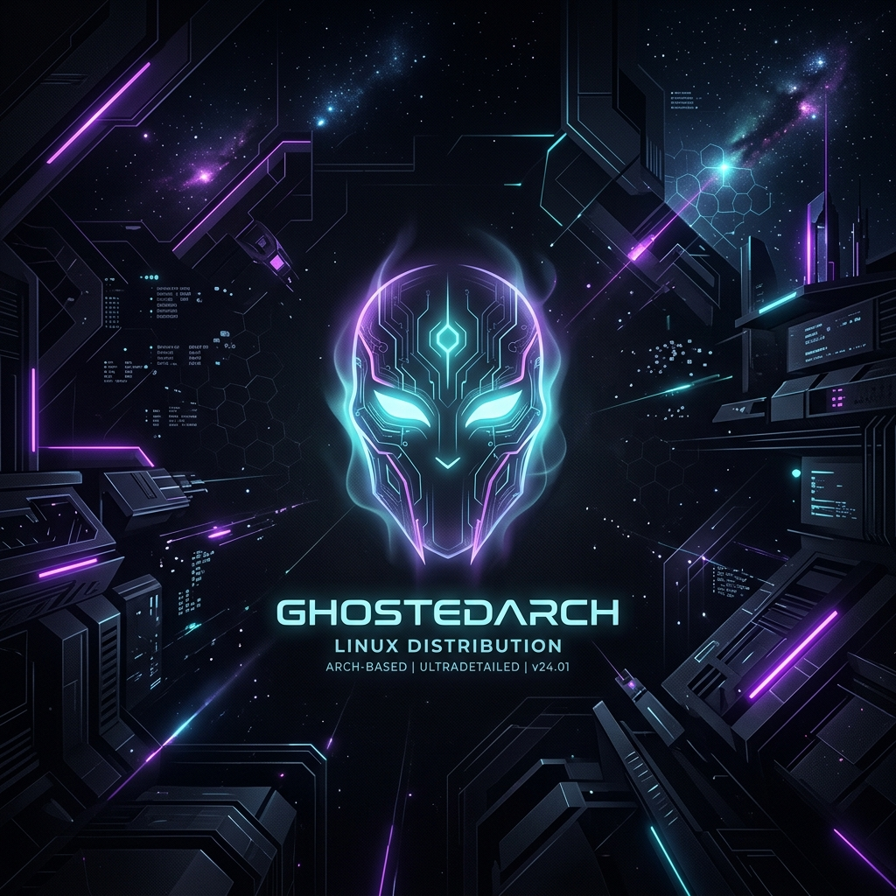

The Ghostly Core of a Customized Distro
Welcome to the official repository for GhostedArch Linux. This portal hosts custom-crafted packages, system configurations, themes, GPG trust keyrings, and neofetch configurations designed to give your Arch installation a high-end, futuristic cyberpunk visual overhaul.
Edit your /etc/pacman.conf file and add the custom repository definition to the bottom of the file.
[ghostedarch]
SigLevel = Optional TrustAll
Server = https://ghostedsage.github.io/ghostedarch/repo/x86_64Note: We set SigLevel = Optional TrustAll to allow importing the keyring package securely without a pre-existing trusted signature.
Run these commands in your terminal to synchronize the databases and install the official GhostedArch signing keyring, which enables cryptographically secure package signatures.
# Sync repositories and install keyrings
sudo pacman -Sy
sudo pacman -S ghostedarch-keyring
# (Optional) Update to secure signature checks in /etc/pacman.conf:
# Set SigLevel = Required DatabaseOptional under [ghostedarch]Package Registry
Search, inspect, and install custom compiled distribution packages
Analyzing packages database...